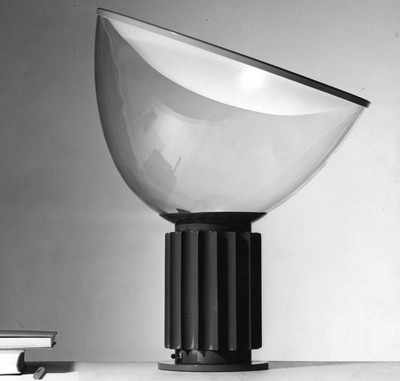

Biography Achille Castiglioni
Born in Milan in 1918, he graduated in Architecture in 1944. Since 1940 he had dedicated himself to experimenting on industrial products with his brothers Livio ((1911-1979) and Pier Giacomo (1913-1968). Their interests were directed towards Urban Planning, Architecture and Design; they performed analysis and research on new forms, techniques and materials, aimed at developing a process of “integral design”. In 1969, he was nominated Professor of “Artistic Industrial Design”; he chaired the Faculty of Architecture in Turin until 1980 and taught in Milan until 1993 as Professor of “Industrial Design” at the Polytechnic of Milan. In 1956 he was one of the founders of ADI (Association for Design Industry). MoMA’s permanent collection in New York hosts 14 of his works. Other works may be found in the following museums: Victoria and Albert Museum in London, Kunstgewerbe Museum in Zurich, Staatliches Museum für Angewandte Kunst in Munich, Design Museum in Prato, Umeleckoprumyslove Museum in Prague, Israel Museum in Jerusalem, The Denver Art Museum, Vitra Design Museum in Weil am Rhein, Angewandte Kunst Museum in Hamburg and Koln. He earned nine “Compasso d’Oro” awards: - “Compasso d’Oro” 1955 (Luminator floor lamp) - “Compasso d’Oro” 1960 (T 12 Palini chair) - “Compasso d’Oro” 1962 (Pitagora espresso machine) - “Compasso d’Oro” 1964 (Spinamatic beer spigot) - “Compasso d’Oro” 1967 (translator’s earphones) - “Compasso d’Oro” 1979 (Parentesi lamp) - “Compasso d’Oro” 1979 (Omsa hospital bed) - “Compasso d’Oro” 1984 (Dry cutlery) - “Compasso d’Oro” 1989 (special mention to a profession dedicated to industrial design on the following grounds ”For he elevated industrial design, by means of his unreplaceable experience, to the highest levels of culture”). Between 1984 and 1986 the Österreichisches Museum für Angewandte of Wien hosted his itinerant “personal” exhibition, which was then successfully repeated at the Akademie der Kunst in Berlin, at the Triennale in Milan, at the Kunstgewerbe Museum in Zurich, at the Haags Gemeentemuseum in The Hague, at the Circulo de Bellas Artes in Madrid and at the Centre Georges Pompidou in Paris. 1985 - Honorary Member of the "Committee of Advisors" at Art Center College of Design (Pasadena, California and Montreaux, Switzerland). 1986 - Honorary Member of the Faculty of Royal Designers for Industry, Royal Society of Art (London). 1987 - Honorary Degree from the Royal College of Art (London). 1993 - Annual award from "The Chartered Society of Designers" (London). 1994 - "Primavera del Design" Award from the Department of Culture (Catalonia). 1995 - "Art sur Table" Award from the Conseil National des Art Culinaire (Paris). 1996 - "IF Design Wettbewerb" Award from Industrie Forum Design (Hanover). 1996 - "Longevity-Langlebigkeit" Award from Design Center (Stuttgart). 1999 - "Domus/INARCH 1998” Award from INARCH. 1999 - "Targa d´Oro Unione Italiana per il Disegno" Award from the Faculty of Architecture of Genoa. 1999 - Wins the Enel "Sostegni per l´Ambiente" competition along with Michele De Lucchi. 2001 - Industrial Design Honoris Causa Degree from the Polytechnic of Milan. In 1995 on the occasion of the award “Primavera del Design”, his “personal” exhibition “A la Castiglioni” was organized in Barcelona and then again at the Furniture Fair in Milan, at the Modern and Contemporary Art Gallery in Bergamo, in 1997 at the Vitra Design Museum in Weil am Rhein, at the MoMA in New York, in 1998 at the Living Design Center Ozone in Tokyo, at the Art Museum in Niitsu and at the De Beyerd Museum in Breda. Very many objects designed by Achille Castiglioni have been produced by remarkable companies such as: Aerotecnica Italiana, Alessi, Aura, Brionvega, Bernini, B&B Italia, BBB Bonacina, Cedit, Cimbali, Danese, De Padova, Driade, Feg, Flos, Fusital, Cassina, Gavina, Ideal Standard, Italtel, Il Coccio Umidificatori, Interflex, Lancia Auto, Longoni, Marcatrè, Moroso, Nagano, Olivetti Synthesis, Omsa, Ortotecnica, Phonola Radio, Poltrona Frau, Poggi, Phoebus Alter, Perani Fonderie, Rem, San Giorgio elettrodomestici, Teorema, Kartell, Up & Up, VLM, Zanotta. His professional activities spanned throughout the fields of Architecture and Urban Planning; he earned international recognitions for his projects applied to serial production in the fields of lighting fixtures and furniture as well as for his breathtaking installations realized around the world. Achille Castiglioni died in Milan on December 2, 2002
$ cd your_repo_root/repo_name
$ git fetch origin
$ git checkout gh-pages
INDUSTRIAL DESIGN
DIABOLO
DIABOLO - Hanging lamp
TACCIA
TRACCIA - Table lamp providing reflected light
TAVOLO 95
TAVOLO 95 - Table